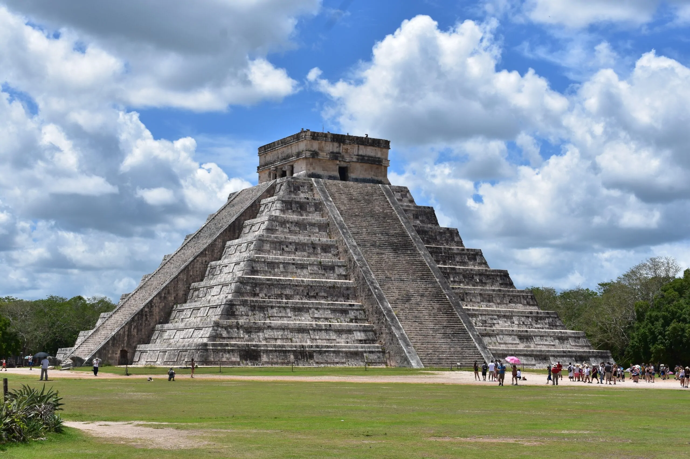

5 cud świata: Chichén Itzá
Chichén Itzá – prekolumbijskie miasto założone przez Majów na półwyspie Jukatan (Meksyk) w IV – VI w. Zachowane zabytki w jego częściach południowej i zachodniej są związane z wcześniejszą kulturą Majów, natomiast w części północnej – z późniejszą kulturą Tolteków. W okresie między 600 a 400 r. p.n.e. w Komchen, niedaleko Chichén Itzá powstały pierwsze na ziemiach Majów złożone budowle na kamiennych platformach. Największy rozwój datowany jest na X – XI wiek. W wieku XIII miasto straciło na znaczeniu, a w XV zostało opuszczone. Od 1924 roku prowadzone wykopaliska pozwoliły odkryć pozostałości wielu zabytków. Nazwa miasta pochodzi od dwóch świętych zbiorników, przy których zostało ono założone (nazwa Chichén Itzá znaczy Źródła Ludu Itzá lub Wrota do studni Itzá). Zbiorniki te zwane cenote służyły od V wieku jako miejsce składania ofiar – Majowie wrzucali rytualnie łamane przedmioty. Majowie wznieśli w mieście ogromne kamienne budowle, około 50 świątyń i obiektów, z których najcenniejszym zabytkiem jest świątynia Kukulkana, albo inaczej El Castillo. To typowa piramida, która różni się od tych egipskich ściętym wierzchołkiem. Na szczyt piramidy prowadzi aż 365 schodów symbolizujących liczbę dni w roku. Jedną z najbardziej intrygujących budowli jest Juego de Pelota - największe i najlepiej zachowane boisko do brutalnej gry w piłkę. Pomimo upływu tysięcy lat od momentu założenia ośrodka, budynki wciąż przypominają o jego dawnej potędze.